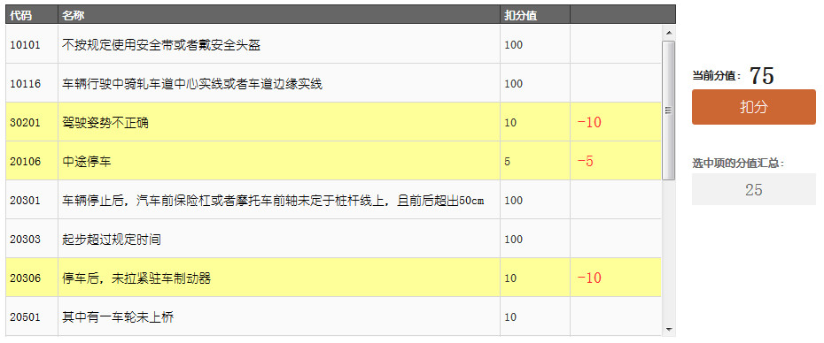
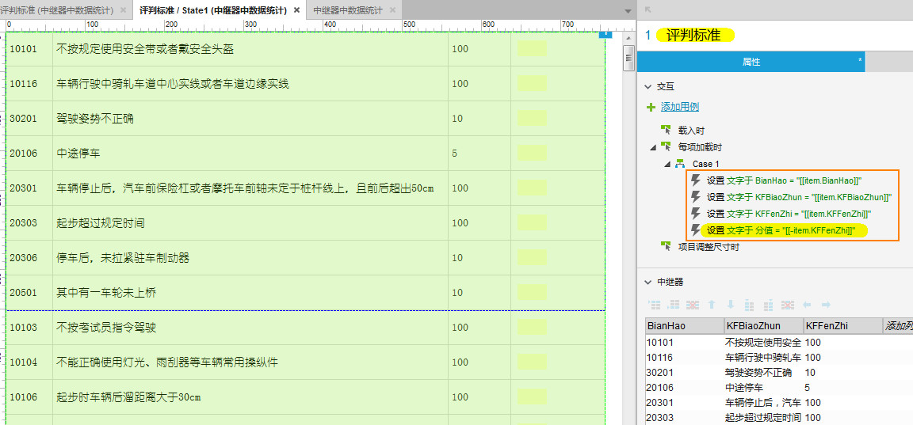
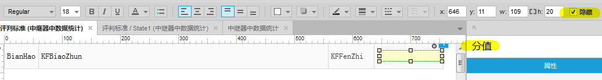
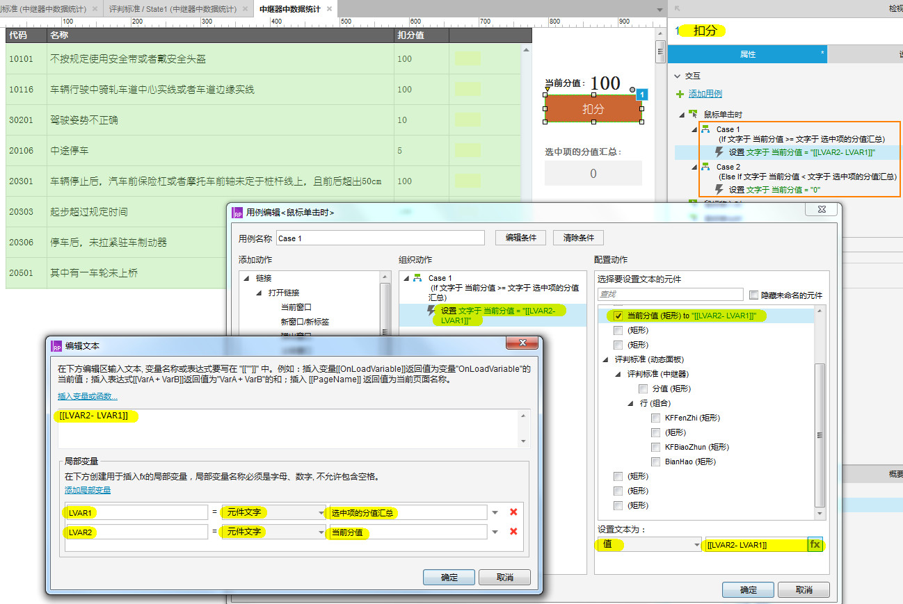

准备工作
默认为100分，最低分为0，最高分为100，当 当前分值被扣除的小于0之后，将其设置为0；
- 新建一个动态面板，命名为：评判标准，在此动态面板中，放一个中继器，中继器也命名为：评判标准；
- 新建一个矩形，命名为：当前分值，用于放计算的最终分数；
- 新建一个矩形，命名为：选中项的分值汇总，用于统计中继器选中项的分数；
- 新建一个按钮，命名为：扣分
效果图如下：
步骤
-
评判标准（中继器）按如下设置：
分值（矩形）的文本设置为：[[-item.KFFenZhi]]
设置分值（矩形）为隐藏状态
将中继器每行的所有矩形进行组合，并命名为：行，单击行时需要如下设置：
如果行（组合）的选中状态为 true- 将行（组合）的选中状态设置为 false
- 隐藏 分值（矩形）
- 设置 选中项的分值汇总（矩形）的值 = 选中项的分值汇总（矩形）之前的值 － 刚选中项的 [[item.KFFenZhi]]
- 将行（组合）的选中状态设置为 true
- 显示 分值（矩形）
- 设置 选中项的分值汇总（矩形）的值 = 选中项的分值汇总（矩形）之前的值 + 刚选中项的 [[item.KFFenZhi]]
-
点击扣分按钮时：如果 当前分值（矩形）的值 大于等于 选中项的分值汇总（矩形）的值:
当前分值（矩形）的值 = 当前分值（矩形）的值 - 选中项的分值汇总（矩形）的值如果 当前分值（矩形）的值 小于 选中项的分值汇总（矩形）的值:

当前分值（矩形）的值 = 0 -
完成